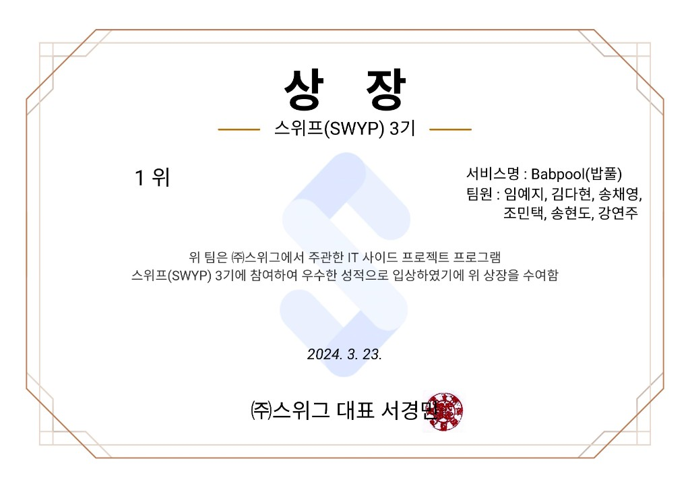

페어링 아카이브 웹 서비스: Pairchive.
Description.
둘이서 한 달간 링크를 모아 하나의 책을 완성하는 페어링 웹 서비스입니다. 1F 진행 중 / 2F 보관함의 책장 메타포로 정보구조를 설계했습니다.
Links.
What did I do.
- Figma에서 로고·UI·디자인 시스템을 설계하고 프로토타입을 제작했습니다.
- 기획부터 UI/UX 디자인, HTML/CSS/JS 프론트엔드 구현까지 전 과정을 담당했습니다.
반갑습니다, 저는 임예지입니다.
UI/UX 프로덕트 디자이너로, 맥락을 빠르게 읽고 AI를 활용해 아이디어를 즉시 시각화합니다.
Figma 설계부터 HTML/CSS/JS 구현까지 직접 실행하며, 기획·디자인·퍼블리싱 사이클을 짧게 돌리는 것을 좋아합니다.
완벽을 기다리기보다 빠르게 만들고, 빠르게 검증하는 방식으로 일합니다.
둘이서 한 달간 링크를 모아 하나의 책을 완성하는 페어링 웹 서비스입니다. 1F 진행 중 / 2F 보관함의 책장 메타포로 정보구조를 설계했습니다.
영주 STAXX 1층 공실에서 시작한 100일 편집숍 실험 프로젝트입니다. 8개 로컬 브랜드 큐레이션, 공간·프로그램 기획, 매장 운영 전 과정을 전담했습니다.
Project Page ↗ Portfolio Case Study ↗
일기 작성과 AI 음악 추천을 연결하는 모바일 앱입니다. PO로서 서비스 기획, UX/UI 방향, 크라우드펀딩 전략을 총괄했습니다.
Tumblbug ↗ Portfolio Case Study ↗
밥 약속 신청을 통해 관심사와 목표를 공유하는 사람들과 대화할 수 있는 네트워킹 플랫폼입니다. SWYP(스위프) 3기 프로젝트로 MVP를 출시했으며, 10개 팀 중 1위를 수상했습니다.
Production Link ↗ Portfolio Case Study ↗
다양한 브랜드의 로고, 타이포그래피, 컬러 시스템, 비주얼 가이드를 제작했습니다.
도시·공공 분야의 맥락 이해를 바탕으로, 이후 프로덕트·서비스 기획과 UX 디자인으로 영역을 확장했습니다.
데이터 기반 서비스 기획, UX 리서치, 프로토타이핑 방법론을 학습했습니다.
SWYP(스위프)는 기획자, 디자이너, 개발자가 팀을 이루어 6주간 사이드 프로젝트를 진행하는 프로그램입니다. 3기 10개 팀 중 심사·투표를 통해 1위를 수상했으며, 배포 서비스는 밥풀(Babpool)입니다. 팀원: 임예지, 김다현, 송채영, 조민택, 송현도, 강연주.
